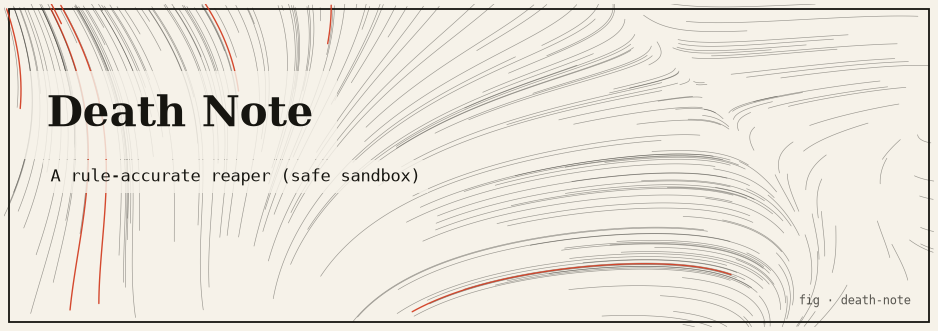

Death Note: Unix Process Termination
A safe, sandboxed process reaper: write a name into a /dev/deathnote-style CLI and the named target — a process the tool spawned and owns — is terminated. No kernel access required.

The idea
In Death Note, writing a person’s name in the notebook causes their death. This package borrows that premise to teach a genuinely useful systems concept: how a program ends another program on Unix. The tool spawns named sandbox processes (simulated workers), maintains a registry, and terminates any worker whose name you write into the CLI. Every “target” is a thread or child process the tool created and owns — it cannot touch anything else on your machine.
The constraint is strict and deliberate: the death note can only kill processes it spawned. Attempting to register or target a PID from outside the sandbox is rejected. That single rule is what makes the project entirely safe while still modelling the real termination flow faithfully.
How Unix ends a process
On Unix, every running process has a PID — a numeric process identifier the kernel assigns and uses as the handle for everything you do to that process. You don’t stop a process by reaching into its memory; you ask the kernel to deliver a signal to its PID. Termination is fundamentally a message, not a direct action.
Two signals matter most. SIGTERM (15) is the polite default: it asks a process to shut down, and the process may install a handler to flush buffers, close files, and exit cleanly. SIGKILL (9) is the hard stop: it cannot be caught, blocked, or ignored, so the kernel tears the process down immediately — no cleanup, no last words. Well-behaved tools try SIGTERM first and escalate to SIGKILL only if a process refuses to leave. There are also permissions: you can generally only signal processes you own, which is why one user cannot casually kill another’s programs.
Finally there is reaping. When a child process exits it does not vanish outright;
it lingers as a zombie holding just its exit status until its parent calls
wait/waitpid to read that status. That read is reaping, and it frees the
last kernel bookkeeping for the process. If a parent dies first, orphaned children are adopted by
the init/reaper process, which reaps them so they don’t accumulate.
How this project demonstrates it
- Spawns a pool of named worker threads, each with a unique name that acts as the human-friendly “target” standing in for a PID.
- Maintains a registry mapping names to thread handles or process IDs — the sandbox’s equivalent of the process table the kernel keeps.
- Accepts names via stdin or CLI argument. If the name is in the registry, it sends a shutdown signal to that worker (a SIGTERM-style cooperative stop) and reaps it by joining the handle and removing it from the registry.
- Workers outside the registry cannot be addressed — the tool refuses with an error, mirroring the kernel’s ownership and permission checks.
- Written in safe Rust with
#![forbid(unsafe_code)], so there is no raw pointer or FFI path to a real system call that could reach outside the sandbox.
Death note questions
What is the difference between SIGTERM and SIGKILL?
SIGTERM (signal 15) is a polite request to terminate that a process can catch, handle, and use to clean up before exiting. SIGKILL (signal 9) cannot be caught, blocked, or ignored: the kernel terminates the process immediately with no chance to clean up.
What does it mean to reap a process?
When a child process exits it becomes a zombie until its parent reads its exit status with
wait or waitpid. That read is called reaping, and it releases the last
kernel bookkeeping tied to the process. The parent, or the init/reaper process that adopts orphans,
is responsible for it.
Is it safe to run? Can it kill real system processes?
It is safe. The tool only manages workers it spawned and owns, tracked in its own registry. Any attempt to target a process from outside that sandbox is rejected, and it is written in safe Rust with unsafe code forbidden, so no external or system process can be harmed.
Honest caveat: the Death Note framing is fiction, and this is a
sandboxed simulation over a worker registry the tool creates and owns — not a general
kill(2) front-end. It illustrates the shape of PIDs, signals, and reaping without ever
signalling a process it did not spawn.
Run it
git clone https://github.com/caelum0x/awesome-mad-projects.git cd death-note cargo test cargo run # Spawning workers: alpha, beta, gamma, delta ... # Write a name to terminate: beta # [beta] received shutdown signal — terminated. # Remaining: alpha, gamma, delta